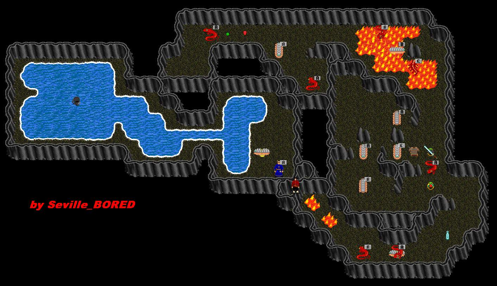

 |
| Graagh -1 |
| Back to Graagh Surface. |
| To Cobrahn. |
| After climbing down the well, swim West to Duke Moreal. He will grant you +100 HP if you bring him a Graagh Halberd. Do not talk to the Duke again if you already have received your HP (your Hally will Poof!) Pass through the secret passage behind the Duke to the caves beyond. A fast regenning zoo is here. Centipedes sometimes drop Grubs. Other Crits include: Sword weilding Crits, Salamanders (kill before they kill your zoo), Wolfspiders, Scorpions and Cave Scorpions. A good spot for Barbs. |
| To Hally HP Quest. |
| To Graagh Lair. |
| To Graagh +1. |